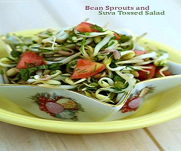

1. BAKED CHICKEN SEEKH
METHOD:
- Preheat oven to 180 degrees Celsius.
- Mix 1 whisked egg with pinch of red chilli powder, salt and a pinch of pepper powder.
- Mix into 1/2 kg chicken keema and keep aside for 10 minutes.
- After 10 minutes add the 1.5 of onion, 1 tsp chopped garlic and 1 tsp ginger garlic paste to the mince.
- You can add chopped coriander too if you like. Add 1 tsp oil as well and mix.
- Add the seekh or chicken masala and mix well with hands.
- Keep the mix in the fridge for at least 1.5 hours.
- Later, wet your hands and form a ball with the mince. Use wooden skewer and press out a kabab.
- Now take a baking dish and line it with oil or butter or ghee.
- Place the kababs on it and bake for 10 minutes.
- Turn side, brush with a little oil till charred and cooked (another 15 minutes).
- Serve with lemons and green chillies.
2. PANEER AND CAULIFLOWER
METHOD:
- Position an oven rack in the bottom of the oven and preheat to 450 degrees Fahrenheit. Line a baking sheet with foil.
- Remove the leaves from 2 cauliflower, then trim the stem flush with the bottom of the head so the cauliflower sits flat on the prepared baking sheet.
- Rub the outside of each head with 1 clove and cut garlic.
- Whisk together the oil, 3 tablespoons mustard, 1/2 teaspoon salt and a few grinds of black pepper in a small bowl.
- Put the cauliflower on the prepared baking sheet and brush the entire outside and inside with the mustard-oil mixture.
- Roast the cauliflower until nicely charred and tender (a long skewer inserted in the centre of the cauliflower should pass through easily), 50 minutes to 1 hour. Let rest for a few minutes.
- Meanwhile, combine 1/2 cup of parsley and ¼ cup of shredded paneer in a small bowl. Brush the outside of the roasted cauliflower heads all over with the remaining 1 tablespoon mustard and generously sprinkle with the Parmesan mixture.
3. MIXED VEGETABLE SALAD
METHOD:
- Cut 2 tomatoes into 8 segments each lengthwise.
- Mix 2 tsp of yogurt, 2 tsp salt, a pinch of pepper, 1 tsp honey and 2 tsp vinegar and blend well together.
- Keep the vegetables (2 carrots, 1 capsicum and 2 cups of shredded cabbage) and the dressing refrigerated separately until ready to serve.
- When ready to serve, mix the vegetables and the dressing together.
- This has to be done at the last minute, as the vegetables combined with the salt tend to shed their juices and thus become limp and soggy if kept too long.
4. FISH CURRY (WITHOUT OIL)

METHOD:
- Soak 2 -3 tamarind sticks in 1 cup of water.
- Chop 2 green chilliesand 2 tomatoes. Peel 2-3 onions. Keep all aside.
- Grind 1 cup of coconut scraping, 1 tsp chilli powder, 1 tsp coriander powder, 1/4 tsp turmeric, 1/2 tsp pepper cones into a paste.
- Add shallots to this paste and blend grind again to make a coarse paste.
- Filter the impurities and strain the tamarind water in a bowl.
- In a pan add the coconut-shallot paste, tamarind water, green chillies, tomatoes, salt. Bring to simmer.
- Now add the fish and curry leaves. Mix well.
- Let it simmer for about 10 minutes.now your dish is ready.
5. LOW FAT CHICKEN CELERY SOUP
METHOD:
- In a large saucepan, heat butter till bubbly.
- Add 1 tsp garlic, 1.5 tsp ginger, 1 chopped onion and stir fry for 2 minutes.
- Add the chopped 2 cups celery and cook for 5 minutes.
- Now add 4 cups of chicken stock.
- Reduce heat and cover it. Let it simmer for 10 minutes till the celery is tender.
- Add salt and pepper. Mix
- Now add 1/2 cup of milk. Taste for salt.
- Remove from heat and let it cool slightly.
- Puree the mixture and then return to pan to rewarm stirring it till well combined.
6. JAMAICAN CHICKEN STEW
METHOD:
- Toss 3 lb chicken pieces with 2 tsp curry powder, 1.5 tsp dried thyme(ajwain), 3/4 tsp allspice, 1/2 tsp red pepper flakes, 1/2 tsp black pepper and 1/2 tsp salt.
- Heat 1 tsp olive oil in a large skillet. Add 1 chopped onion and 3 chopped garlic and sauté until onions are softened, about 3 minutes. Add chicken mixture to skillet and brown on both sides.
- Add 1.5 cup of diced tomatoes and 1.5 cup of black beans and mix well. Transfer to crock pot and cook in high for 4-5 hours until tender and meat is falling off the bone. Alternatively, you can continue to cook the chicken on the stove top for about 25-30 minutes until chicken is done.
- Your dish is ready to serve!
7. BAKED CARROT FRIES
METHOD:
- In a bowl, take 5-6 carrots(cut in long strips ), add 2 tsp olive oil, 1/2 tsp coriander powder, and pinch of sugar. Mix it well.
- Line up the baking tray with an aluminum foil and grease it. Line up the carrots over the tray and set in the oven at 100 degrees for 20 minutes.
- Serve hot or at room temperature.
8. BARLEY KHICHDI
METHOD:
- In a pressure cooker heat 1 tsp oil add 1 tsp cumin seeds and 1 chopped onions, once they start to turn light brown.
- Add 1 cup of barley or daliya and roast it ...at this stage you can add 1 tsp ghee but that is optional.
- Once the Daliya is roasted add 1 cup sprouts and 1 chopped tomatoes. Add 4 cups water (use the same cup that you have used to measure Daliya) add salt to taste, turmeric powder, spice mix.
- Now bring the mixture to a boil, once it starts to boil.
- Cover with the lid and cook for 3-4 whistles. Now your dish is ready.
9. OATS WITH VEGETABLE AND SOY

METHOD:
- In a pan add 1 cup water to it add ½ cup soy granules and bring it to a boil.
- Once its boiled remove from heat and keep it aside. Heat 1 tsp oil add 1/2 tsp cumin seeds and 1 chopped onion , now one by one add all the seasoned vegetables(all according to your wishes like tomato , capsicum ,etc) in order of the time they take to cook.
- Add some water Cover the lid and let the vegetables cook a bit (don’t overcook the veggies).
- Now add salt to taste, turmeric, chilli and spice mix. Add soy granules and oats cover and let them cook for about 7-8min.
- Serve hot or at room temperature.
10. CARROT PORRIDGE

METHOD:
- In a pressure cooker heat 1/2 tsp ghee add 2 crushed cardamom, now add 1 cup of Daliya and roast well, add 1 cup of shredded carrots, 1 cup of cow milk and 2 cups of water.
- Cover it and cook for 3 whistles.
- Now add the toppings like 5-6 chopped almonds, 1 tsp jaggery sugar or 1 tsp honey, some raisins and other toppings you like and your dish is ready.